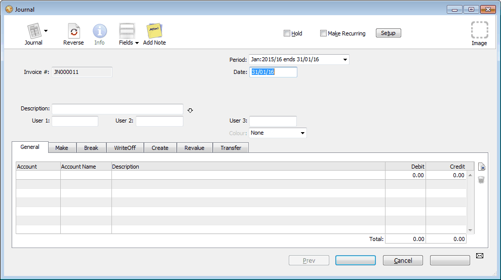

MoneyWorks Manual
General Ledger Journals
Use journal transactions to transfer balances from one account to another, for accruals and for end of year adjustments.
Note: Avoid using journals to correct entries made with other transaction types; instead use the Cancel Transaction command to cancel the incorrect transaction and then re-enter a correct one. As well as being more difficult to work out (unless you are an accountant), journals are treated differently for the purposes of GST and cashflow reporting.
Note: You cannot use a journal transaction to make adjustments to the Accounts Receivable or Accounts Payable control accounts. If you need to make adjustments of this kind, use the Adjustments commands (Cancel Transaction, Contra Invoices, Write Off etc.), or use an invoice transaction.
Note: You cannot attach a job code to a journal detail line.
- In the Transaction list, click the New button or press Ctrl-N/⌘-N to create a new transaction
- If necessary set the transaction Type to Journal
Pressing Alt-Shift-5/Ctrl-Shift-5 is a keyboard shortcut for this

The Reference number is set automatically, and cannot be altered1.
- Ensure the journal type tab is set to General
For information on stock journals see Stock Journals.
- Type the date for the Journal into the Date field
- If necessary you can change the period into which the journal is to be posted using the Period pop-up menu
- Enter a description for the journal into the Description field
- Press Ctrl-tab (Mac) or Ctrl-` (Win) to go to the first detail line
- Enter the first account code to be debited or credited into the Account field
- Enter a description into the Description field
- Click or Tab into either the Debit or the Credit fields and enter the amount to be debited or credited to the account
- Press the ↩/return key to create a new detail line
Enter the details of the next account to be credited or debited.
If you accidentally create extra detail lines, they will be removed automatically when you save the transaction provided there is no account code in the Account field.
The OK and Next buttons remain dimmed until the total of the debits is equal to the total of credits. A tooltip will show the amount needed to balance the journal.
- When the details of the journal entry are complete, click OK
The sum of the amounts in the debit column must be equal to the sum of the amounts in the credit column. You may not enter an amount into both the debit and credit column on the same line.
Note: To automatically add one more line to make the journal balance, click either of the totals in the footer. If the debits and credits are not already equal, MoneyWorks will add a line for you to make them so. You just need to add the relevant account code. (MoneyWorks 9.1.5 and later)
Some accounting systems allow you to do a “one legged” journal (one that does not balance) in order to correct an out-of-balance condition in the general ledger. Proper accounting systems (such as, for example, MoneyWorks) don’t let your ledger get out of balance, and hence don’t need one legged journals.
1 The Journal Number is sequential. However if you create a journal and then delete it without posting it, it will leave a gap in the sequence. ↩